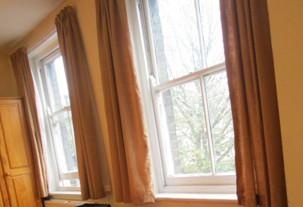
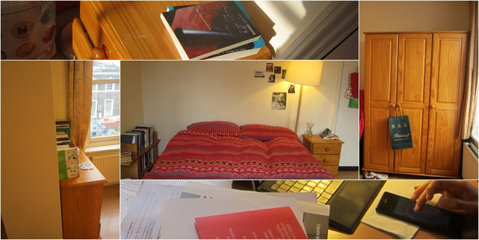

Home Library in London, 2015
Digital and physical collections, materiality, and mediated memories
Home
About
Data Collection
The Materiality of Reading
Data Analysis
Presentation
The Home Space
Summary of the Study
Menu

Overlaps of the Private and the Public
22 March, 2016
in
#The Home Space

What Is Home?
21 March, 2016
in
#The Home Space
The Sensory Environment
18 March, 2016
in
#The Home Space
Reading in the Personal Library
29 February, 2016
in
#The Home Space